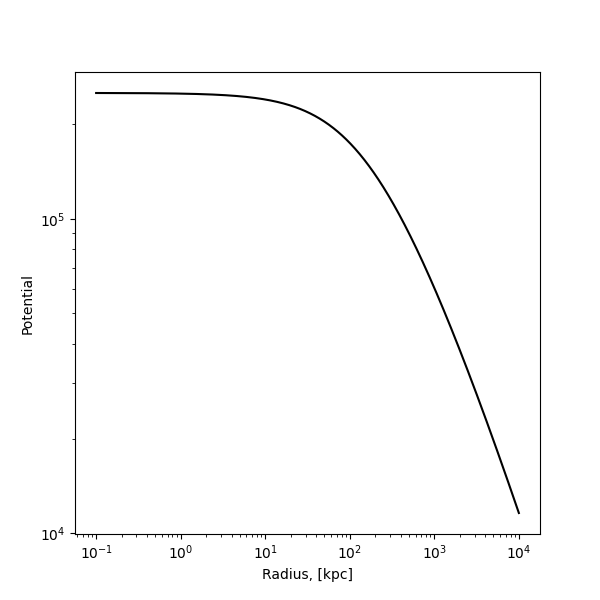
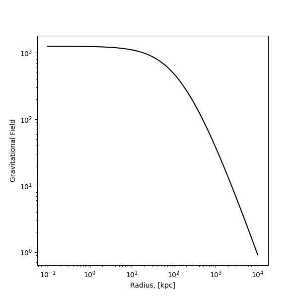

Note
Go to the end to download the full example code.
Computing Field Gradients: Spherical#
In this cookbook, we’ll show how to compute covariant and contravariant gradients of a scalar field in PyMetric.
import matplotlib.pyplot as plt
import numpy as np
To set the stage for this example, we’ll consider a common type of scenario in computational astrophysics: computing fields from potentials!
Step 1: Setting Up the System#
Like almost any PyMetric workflow, we need to start by building a coordinate system and grid. In this case, we’ll use spherical coordinates and a generic grid with high radial resolution and relatively low angular resolution.
Note
In more complicated geometries, PyMetric can still perform these computations, but a little more care needs to be taken when recovering \(P\) from \(\nabla P\).
import pymetric as pym
# Create the coordinate system.
cs = pym.SphericalCoordinateSystem()
# Construct the grid. For this, we'll use 1000 points on
# a logarithmic grid from r = 1e-1 to r = 5e3 and then use
# standard linear grids for the angular region. We'll bound the box
# at [0, 1e4] radially.
bbox = [[0, 0, 0], [1e4, np.pi, 2 * np.pi]]
r = np.geomspace(1e-1, 1e4, 1000)
# Note: for phi and theta, we go from 0 -> np.pi (2*np.pi) and then cut of the edges
# so that we can create 20 points in between 0 and the upper bound. This ensures
# the metric is never degenerate.
theta, phi = np.linspace(0, np.pi, 22)[1:-1], np.linspace(0, 2 * np.pi, 22)[1:-1]
# Now build the grid.
grid = pym.GenericGrid(cs, [r, theta, phi], ghost_zones=1, center="cell", bbox=bbox)
Step 2: Build the Potential Field#
The next important step is to construct the potential field as a function of the radius. For this case, we’ll use a NFW profile:
We’ll use a scale free coordinate system (\(G=1\)) to simplify things:
# Create the function for the potential.
def potential_function(_r, R_s=100, rho_0=1):
return -4 * np.pi * rho_0 * R_s**3 * (np.log(1 + (_r / R_s)) / _r)
# Create a dense field from the function.
field = pym.DenseTensorField.from_function(
potential_function, grid, ["r"], rho_0=2, R_s=100
)
# Plot the field.
fig, axes = plt.subplots(1, 1, figsize=(6, 6))
axes.loglog(r, -field[...], color="k", label="NFW Potential")
axes.set_xlabel("Radius, [kpc]")
axes.set_ylabel("Potential")
plt.show()

Step 3: Compute the Gradient#
In spherical coordinates, we are fortunate that the covariant and contravariant bases are equivalent (for radial fields). Thus, we’ll use the covariant gradient.
# Compute gradients.
gradPhi_cov = field.gradient(basis="covariant", output_axes=["r"])
# Plot the field.
fig, axes = plt.subplots(1, 1, figsize=(6, 6))
axes.loglog(r, gradPhi_cov[..., 0], color="k", label="NFW Field")
axes.set_xlabel("Radius, [kpc]")
axes.set_ylabel("Gravitational Field")
plt.show()

Total running time of the script: (0 minutes 0.434 seconds)